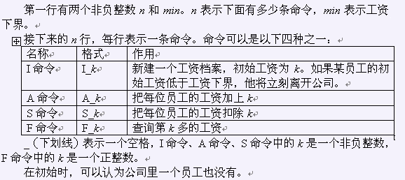

[NOI2004]郁闷的出纳员
时间限制：5s 空间限制：64MB
题目描述
OIER公司是一家大型专业化软件公司，有着数以万计的员工。作为一名出纳员，我的任务之一便是统计每位员工的工资。这本来是一份不错的工作，但是令人郁闷的是，我们的老板反复无常，经常调整员工的工资。如果他心情好，就可能把每位员工的工资加上一个相同的量。反之，如果心情不好，就可能把他们的工资扣除一个相同的量。我真不知道除了调工资他还做什么其它事情。工资的频繁调整很让员工反感，尤其是集体扣除工资的时候，一旦某位员工发现自己的工资已经低于了合同规定的工资下界，他就会立刻气愤地离开公司，并且再也不会回来了。每位员工的工资下界都是统一规定的。每当一个人离开公司，我就要从电脑中把他的工资档案删去，同样，每当公司招聘了一位新员工，我就得为他新建一个工资档案。老板经常到我这边来询问工资情况，他并不问具体某位员工的工资情况，而是问现在工资第k多的员工拿多少工资。每当这时，我就不得不对数万个员工进行一次漫长的排序，然后告诉他答案。好了，现在你已经对我的工作了解不少了。正如你猜的那样，我想请你编一个工资统计程序。怎么样，不是很困难吧？
输入格式

输出格式
输出文件的行数为F命令的条数加一。对于每条F命令，你的程序要输出一行，仅包含一个整数，为当前工资第k多的员工所拿的工资数，如果k大于目前员工的数目，则输出-1。输出文件的最后一行包含一个整数，为离开公司的员工的总数。
样例输入
9 10 I 60 I 70 S 50 F 2 I 30 S 15 A 5 F 1 F 2
样例输出
10 20 -1 2
提示
I命令的条数不超过100000 A命令和S命令的总条数不超过100 F命令的条数不超过100000 每次工资调整的调整量不超过1000 新员工的工资不超过100000
题目来源
没有写明来源